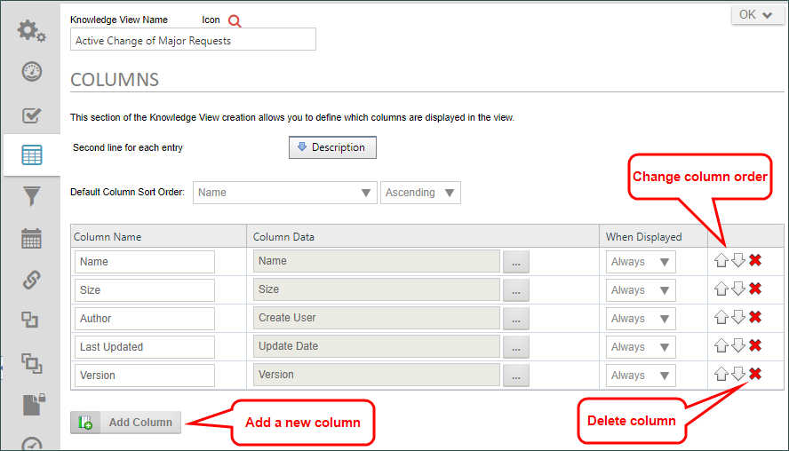
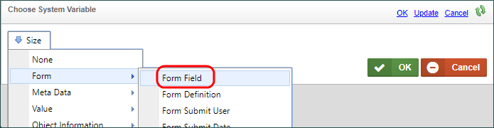
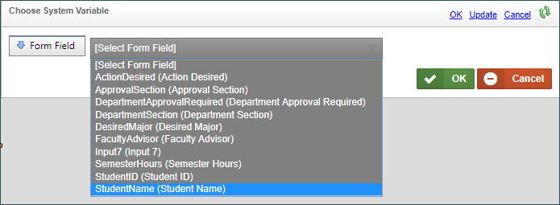
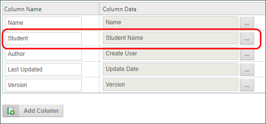
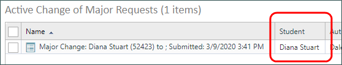
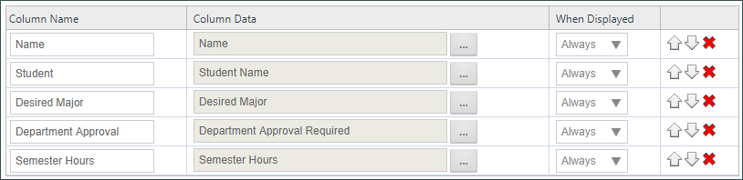
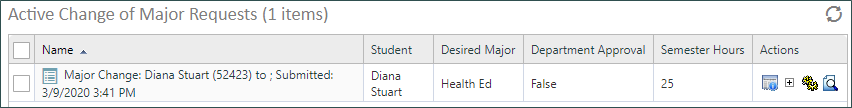
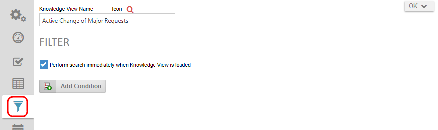
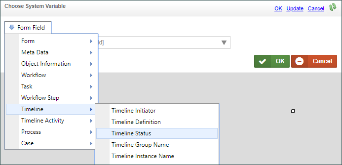
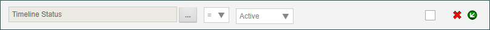

|
|
Lesson Contents | In this Lesson, we will discuss how to configure the Columns and Filters for a Knowledge View. |
If your Knowledge View definition isn’t already open, open it from the Content List, and navigate to the Columns tab.
As we saw at the end of the last lesson, the default columns aren’t exactly what we want. We can add new columns on this tab by clicking the Add Column button. You can have as many columns as you need. You can also delete a column by clicking on the X icon on the right side of the column list. You can change the column order by using the Up or Down icons to move the columns to the order you desire.

In our case, however, we don’t need any new columns, but we do need to edit the default columns to show us some more helpful information.
Let’s start by editing the Size column. We’ll change the Column name from “Size” to “Student”. Next we’ll change the Column Data that is displayed by clicking on the Build Button for the Object Picker for that field. When we do, the Choose System Variable Dialog box will open. We want to display the Name of the student who is making the request, so from the dropdown menu in the dialog box, select “Form” then “Form Field”.

When we do, we can now see a dropdown box that lists all of the fields on our Change of Major Request Form. Select the Student Name field, then click the OK button to save our changes.

We can immediately see the change reflected in the object picker.

We can also check our work by clicking on the Update and Run menu item in the button menu at the top right corner of the screen. When our Knowledge View runs, we can now see that name and data displayed in the second column has changed to display the student name.

We can now navigate back to the Knowledge View definition in the Content List, and, following the same procedure we just performed for the Student Name field, we can change the remaining columns to display the form fields for the Desired Major, Department Approval Required, and Semester Hours fields.

Once again, we can run our Knowledge View and see that now we have a Knowledge View that shows us the relevant information we need.

Let’s navigate back to the Knowledge View definition and look at the last tab we need to address, the Filter tab. Navigate to that tab when the Knowledge View definition opens.

The Filter tab gives us another way to further narrow the information returned by the Knowledge View. Right now, the Knowledge View returns all of the form instances for the Change of Major Request form. That’s not what we really want to see, though. As we explained in Lesson 1 of this module, we only want to see the requests that are currently active. We can use the Filter tab to narrow the data returned to only the actively running requests. In this case, that means we need to check the status of the Process Timeline to ensure it’s running.
We can click the Add Condition button to add a new condition row to the Filter tab.
In the new condition row, click on the Object Picker’s Build button to open the Choose System Variable dialog box. From the dropdown menu, select “Timeline”, then “Timeline Status”.

Once you have done so click the Ok button to close the dialog box. In the Operator dropdown, be sure the equal sign is showing (=), then from the dropdown on the right side of the Operator, select "Active".

We have now created a filter that will check each of our form instances to see if they are associated with an actively running timeline, and will show us only those active requests. Again, we can check our work by clicking on the Update and Run menu item, to see the data. We should only see Form instances for timelines that are not yet complete.
Our Knowledge View is now complete…almost. In the next lesson, we’ll look at some other properties to make it more suitable for display to our users. For now, though, we have a Knowledge View that shows us form data from only those Change of Major Requests that are currently running.